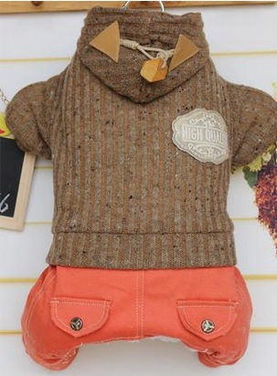

Darbo Drabužiai | Žieminiai švarkai | Craftwear.lt

Krepšelis
Krepšelis tuščias REGISTRUOTIS PRISIJUNGTI Kaip užsisakyti? Partneriams Apie mus Kontaktai Leidiniai Žemėlapis iki sandėlio +370 640 34319 Darbo Drabužiai Padidinto matomumo drabužiai (101) Darbo Kostiumai (5) Darbo Kombinezonai (11) Darbo Puskombinezoniai (55) Puskombinezoniai (44) Žieminiai puskombinezoniai (11) Švarkai Darbui (46) Švarkai darbui (41) Žieminiai švarkai (5) Kelnės, šortai darbui (54) Darbo kelnės (42) Šortai, bridžai darbui (8) Žieminės kelnės (4) Striukės (79) Žieminės striukės (50) Softshell striukės (29) Liemenės darbui (28) Megztiniai, šilti marškiniai (2) Neperšlampama apranga (40) Apatiniai drabužiai (14) Kepurės (31) Vasarinės kepurės (13) Žieminės kepurės, aksesuarai (18) Apranga moterims (58) Profesinė apranga Apranga suvirintojams (82) Avalynė (5) Drabužiai (53) Pirštinės (13) Saugos priemonės (11) Apranga kelininkams (134) Avalynė (8) Drabužiai (86) Pirštinės (20) Saugos priemonės (20) Apranga medicinai (99) Avalynė (28) Chalatai, puschalačiai, švarkeliai (27) Pirštinės (3) Kelnės (10) Saugos priemonės (31) Apranga maisto pramonei (79) Avalynė (29) Drabužiai (32) Prijuostės (13) Galvos apdangalai (5) Apranga miškininkams (70) Avalynė (4) Drabužiai (5) Pirštinės (10) Saugos priemonės (49) Drabužiai reklamai Marškinėliai (31) Polo marškinėliai (18) Džemperiai (39) Softshell striukės (26) Kepurėlės (16) Kelnės, šortai (3) Laisvalaikiui (18) Darbo Avalynė Sandalai (30) Pusbačiai (57) Batai (52) Klumpės (34) Guminė Avalynė (21) Žieminė avalynė (35) Priedai batams, kojinės (18) Darbo pirštinės Tekstilinės darbo pirštinės (29) Odinės Pirštinės (58) Aplietos pirštinės darbui (47) Guminės Pirštinės (12) Kumštinės Pirštinės (6) Vienkartinės Pirštinės (12) Žieminės pirštinės (39) Suvirintojų pirštinės (9) Specializuotos pirštinės (11) Atsparios pjūviams pirštinės (14) Saugos Priemonės Vienkartinė (40) Antbačiai, antrankoviai (6) Pirštinės (13) Chalatai, kombinezonai (12) Prijuostės (2) Kepurėlės (5) Antveidžiai (2) Klausos apsaugos priemonės (27) Ausų kamšteliai (12) Ausinės (15) Akių, veido apsaugos priemonės (72) Akiniai (61) Veido apsauga (11) Kvėpavimo takų apsaugos priemonės (49) Respiratoriai (7) Medžiaginės kaukės (6) Puskaukės, pilno veido kaukės (5) Filtrai ir priedai puskaukėms (16) BLS produkcija (15) Galvos apsaugos priemonės (25) Šalmai (14) Šalmai-kepurės (2) Priedai (9) Kritimo apsauga (63) Apraišai (14) Lynai (9) Lynai su amortizatoriais (4) Kritimo sulaikymo blokai (4) Karabinai (6) Kitos saugos priemonės (62) Dezinfekavimo priemonės (11) Antkeliai, antrankoviai, petnešos (11) Sanitarinės - higieninės prekės (32) Pirmos pagalbos ir priešgaisrinės prekės (8) Mes gaminame Švarkai (12) Puskombinezoniai (13) Striukės (4) Kelnės/Bridžai (8) Liemenės/džemperiai (3) Medicina/Maisto pramonė (33) Puschalačiai (16) Kelnės (8) Prijuostės (6) Galvos apdangalai (3) Išpardavimas ! Kategorijos Darbo Drabužiai (524) Padidinto matomumo drabužiai (101) Darbo Kostiumai (5) Darbo Kombinezonai (11) Darbo Puskombinezoniai (55) - Puskombinezoniai (44) - Žieminiai puskombinezoniai (11) Švarkai Darbui (46) - Švarkai darbui (41) - Žieminiai švarkai (5) Kelnės, šortai darbui (54) - Darbo kelnės (42) - Šortai, bridžai darbui (8) - Žieminės kelnės (4) Striukės (79) - Žieminės striukės (50) - Softshell striukės (29) Liemenės darbui (28) Megztiniai, šilti marškiniai (2) Neperšlampama apranga (40) Apatiniai drabužiai (14) Kepurės (31) - Vasarinės kepurės (13) - Žieminės kepurės, aksesuarai (18) Apranga moterims (58) Profesinė apranga (464) Apranga suvirintojams (82) - Avalynė (5) - Drabužiai (53) - Pirštinės (13) - Saugos priemonės (11) Apranga kelininkams (134) - Avalynė (8) - Drabužiai (86) - Pirštinės (20) - Saugos priemonės (20) Apranga medicinai (99) - Avalynė (28) - Chalatai, puschalačiai, švarkeliai (27) - Pirštinės (3) - Kelnės (10) - Saugos priemonės (31) Apranga maisto pramonei (79) - Avalynė (29) - Drabužiai (32) - Prijuostės (13) - Galvos apdangalai (5) Apranga miškininkams (70) - Avalynė (4) - Drabužiai (5) - Pirštinės (10) - Saugos priemonės (49) Drabužiai reklamai (151) Marškinėliai (31) Polo marškinėliai (18) Džemperiai (39) Softshell striukės (26) Kepurėlės (16) Kelnės, šortai (3) Laisvalaikiui (18) Darbo Avalynė (257) Sandalai (30) Pusbačiai (57) Batai (52) Klumpės (34) Guminė Avalynė (21) Žieminė avalynė (35) Priedai batams, kojinės (18) Darbo pirštinės (237) Tekstilinės darbo pirštinės (29) Odinės Pirštinės (58) Aplietos pirštinės darbui (47) Guminės Pirštinės (12) Kumštinės Pirštinės (6) Vienkartinės Pirštinės (12) Žieminės pirštinės (39) Suvirintojų pirštinės (9) Specializuotos pirštinės (11) Atsparios pjūviams pirštinės (14) Saugos Priemonės (355) Vienkartinė (40) - Antbačiai, antrankoviai (6) - Pirštinės (13) - Chalatai, kombinezonai (12) - Prijuostės (2) - Kepurėlės (5) - Antveidžiai (2) Klausos apsaugos priemonės (27) - Ausų kamšteliai (12) - Ausinės (15) Akių, veido apsaugos priemonės (72) - Akiniai (61) - Veido apsauga (11) Kvėpavimo takų apsaugos priemonės (49) - Respiratoriai (7) - Medžiaginės kaukės (6) - Puskaukės, pilno veido kaukės (5) - Filtrai ir priedai puskaukėms (16) - BLS produkcija (15) Galvos apsaugos priemonės (25) - Šalmai (14) - Šalmai-kepurės (2) - Priedai (9) Kritimo apsauga (63) - Apraišai (14) - Lynai (9) - Lynai su amortizatoriais (4) - Kritimo sulaikymo blokai (4) - Karabinai (6) Kitos saugos priemonės (62) - Dezinfekavimo priemonės (11) - Antkeliai, antrankoviai, petnešos (11) - Sanitarinės - higieninės prekės (32) - Pirmos pagalbos ir priešgaisrinės prekės (8) Mes gaminame (73) Švarkai (12) Puskombinezoniai (13) Striukės (4) Kelnės/Bridžai (8) Liemenės/džemperiai (3) Medicina/Maisto pramonė (33) - Puschalačiai (16) - Kelnės (8) - Prijuostės (6) - Galvos apdangalai (3) Išpardavimas ! (21) Titulinis Darbo Drabužiai Švarkai Darbui Žieminiai švarkaiŽieminiai švarkai
Pavadinimas (A - Z) Pavadinimas (Z - A) Pigiausios viršuje Brangiausios viršuje Vyriškas žieminis švarkas | Classic 18,22 € / 22,05 € Žieminis vyriškas darbo švarkas | ORION OTAKAR 27,45 € / 33,21 € -45% Pašiltintas vyriškas darbo švarkas | Canvas Flys 16,45 € / 19,90 €29,74 € / 35,99 € ŽIEMINIS VYRIŠKAS DARBO ŠVARKAS | SIRIUS LUCIUS 30,12 € / 36,45 € Žieminis vyriškas darbo švarkas | BRIGHTON WINTER 34,88 € / 42,21 €
Informacija
Žemėlapis iki sandėlio ES fondų investicijų veiksmų programa Leidiniai Naujienlaiškiai Apie mus Naujienos Partneriams Gamintojai KontaktaiAptarnavimas
Slapukų naudojimas Privatumo politika Kaip užsisakyti? Taisyklės Pristatymo sąlygos Prekių gražinimas ir garantijaMano paskyra
Registruotis Prisijungti Pamiršau slaptažodį NaujienlaiškisSusisiekite